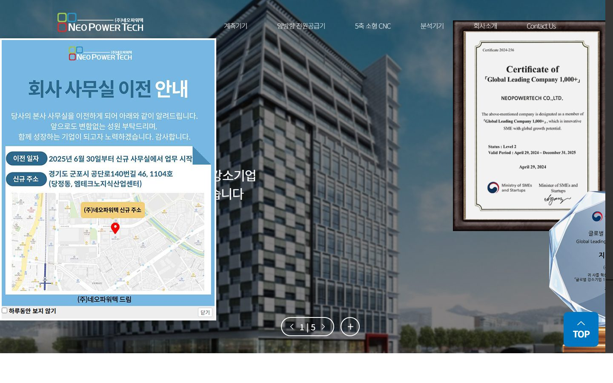
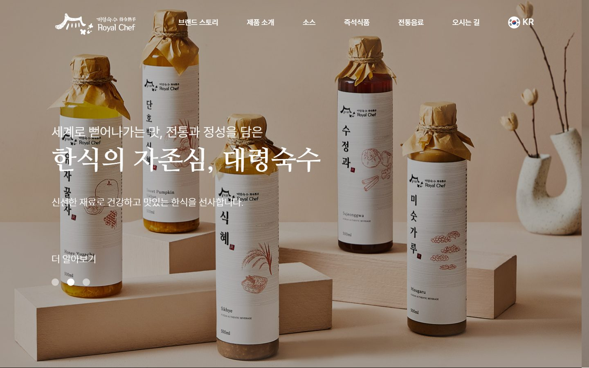
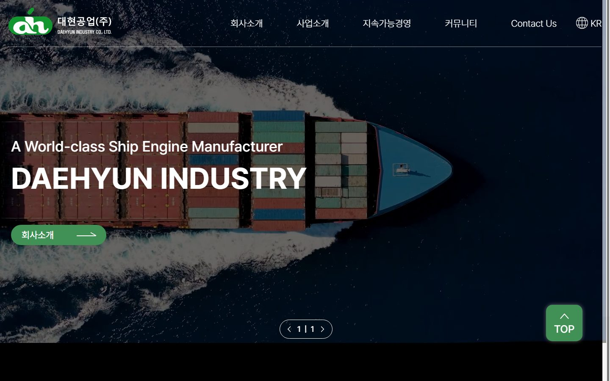
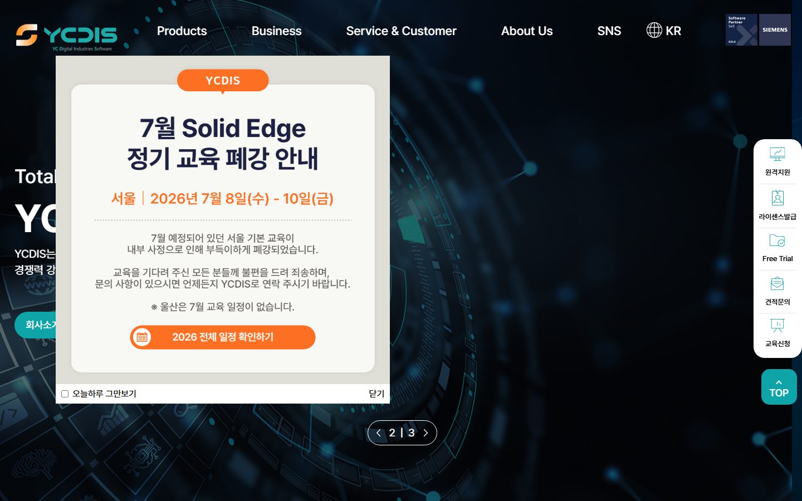
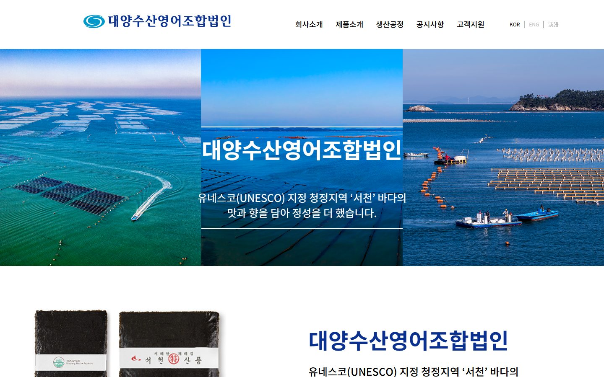

검색해도 회사가 나오지 않을 때
업종별로 고객이 실제 검색하는 키워드를 조사해 페이지 제목과 본문 구조에 넣고 검색엔진 등록까지 기본으로 포함합니다.
대전 · 세종 · 충청권 방문 미팅평일 09:00 ~ 18:00
WEB
검색에서 찾히고, 들어와서 문의하게 만드는 홈페이지.
기술기업·연구기관·병원 홈페이지를 검색 노출과 전환 기준으로 설계합니다.

대전지사의 방식
홈페이지는 예쁜 것보다 찾히는 것이 먼저입니다.
기술기업과 연구기관 홈페이지의 목적은 문의와 자료 요청입니다.
이런 경우
업종별로 고객이 실제 검색하는 키워드를 조사해 페이지 제목과 본문 구조에 넣고 검색엔진 등록까지 기본으로 포함합니다.
서비스 페이지마다 문의 버튼과 상담 설문지를 연결하고 카탈로그 · 회사소개서를 첫 화면에서 받을 수 있게 설계합니다.
인쇄물과 같은 디자인으로 웹 카탈로그 · 전자책을 만들어 온 · 오프라인을 맞춥니다.
제작 항목
필요한 항목만 골라 의뢰하셔도 좋습니다.
WEB
기술기업·연구기관·협회 홈페이지를 반응형으로 제작합니다.
검색 노출 세팅과 문의 연동을 기본으로 포함합니다.

WEB
제품 판매와 브랜드 소개를 함께 하는 온라인 스토어를 구축합니다.
상세페이지와 결제, 모바일 화면까지 한 번에 만듭니다.

WEB
광고 유입용 랜딩페이지와 인쇄 카탈로그의 웹 버전을 만듭니다.
인쇄물과 같은 디자인으로 온·오프라인을 맞춥니다.
| 구분 | 기본 제작 사양 |
|---|---|
| 범위 | 기업 · 기관 홈페이지, 쇼핑몰, 랜딩페이지, 웹 카탈로그 |
| 구성 | 10페이지 내외 기업 사이트 기준, PC · 모바일 반응형 |
| 검색 세팅 | 키워드 사이트맵 · 제목 · 설명문 · 구조화 데이터 · 서치어드바이저 · 서치콘솔 등록 |
| 문의 연동 | 상담 설문지 · 자료 다운로드 · 전화 연결 |
| 표준 기간 | 4 ~ 6주 (콘텐츠 준비 상태에 따라 조정) |
| 오픈 후 | 오류 수정 기본 · 월 단위 운영 관리 계약 |
상담 시 목적 · 수량 · 일정에 맞춰 조정합니다.
진행 순서
제작 목적과 참고 사이트,
콘텐츠 준비 상태를 확인합니다.
키워드 조사 후 페이지 구성을 잡고
견적과 일정을 안내합니다.
메인 시안 확정 후
PC·모바일 반응형으로 제작합니다.
기기별 화면과 검색 세팅을
확인하고 오픈합니다.
유입·문의 데이터를 보며
화면을 다듬고 관리합니다.
제작 사례






자주 묻는 질문
대전에서 홈페이지를 의뢰하실 때 가장 많이 받는 질문입니다.
10페이지 내외 기업 홈페이지 기준으로 4~6주가 걸립니다. 콘텐츠 준비 상태에 따라 달라지므로 상담 시 페이지 구성을 먼저 잡고 단계별 일정을 안내드립니다.
네. 키워드 조사, 페이지 제목·설명문 작성, 사이트맵과 구조화 데이터 세팅, 서치어드바이저·서치콘솔 등록까지 기본으로 포함합니다. 오픈 후 노출 상태도 함께 확인해 드립니다.
네. 촬영팀과 기획자가 있어 회사 사진 촬영부터 소개 문구 정리까지 함께 진행합니다. 카탈로그나 브로슈어가 있으면 그 내용을 홈페이지 구조로 옮겨 드립니다.
네. 기존 사이트의 유입 키워드와 문의 경로를 분석한 뒤 유지할 것과 바꿀 것을 나눠 리뉴얼합니다. 도메인과 검색 순위를 잃지 않도록 주소 이전 설정도 함께 처리합니다.
오픈 후 발견되는 오류는 기본으로 수정하고, 배너 교체·게시물 등록 같은 운영은 월 단위 관리 계약으로 진행합니다. 블로그·콘텐츠 운영과 함께 맡기실 수도 있습니다.
네. 대전 전 지역과 세종·청주는 필요한 날 방문해 참고 사이트를 화면으로 함께 보며 상담드립니다. 전화 1600-9487로 요청해 주세요.
함께 보는 서비스
FIRST DESIGN DAEJEON
기획 · 디자인 · 번역 · 촬영 · 인쇄를 한 팀이 진행합니다.
원고가 정리되기 전이라도 목차와 일정부터 함께 잡아 드립니다.